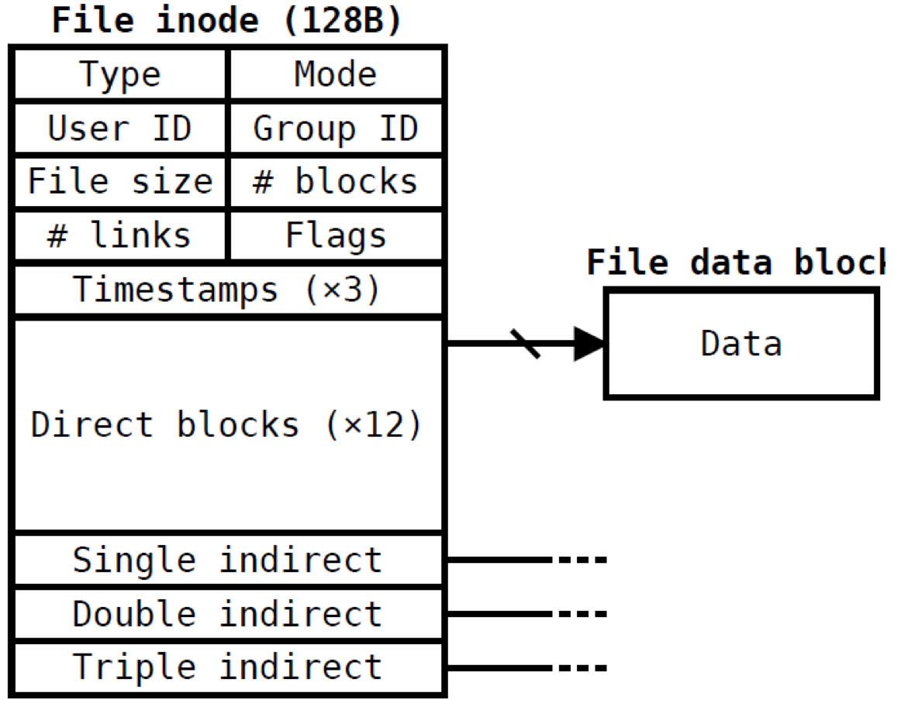

以上内容摘抄自徐老师操作系统主页, 当然以前的也都是这样, 这次实验比较特殊, 因为是附加实验, 所以没有强制性的要求, 实验如何完成也是基于大家自己的喜好, 以防万一, 我给出一个基本的实现细节, 大家可以随意调整, 在报告中说明即可, 如果有使用到外部文件, 也最好在报告中说明
可以看到这次实验只是在上一次的实验中添加了一部分内容, 需要添加的系统调用在内核中完成即可, 可能还需要一些其他的系统调用实现, 这也完全由你们决定.
一个完整的文件系统不外乎包含以下功能:
当然大家不需要完全实现以上内容, 我们提出以下最低限度的要求:
'/'磁盘的读写以一个扇区, 即 512B 为单位, 为了提高效率, 操作系统都连续一次性读连续的扇区, 即一个"块", 当然你也可以设定一个块的大小为一个扇区, 以下定义都以一块等于一个扇区来进行说明.
上面已经说了, 大家只需要在文件系统中创建一个目录即可, 不过文件目录的结构也是需要的:
typedef struct s_file{
char filename[24];
unsigned int inode_offset;
unsigned int size;
}File;
typedef struct s_dir{
File file[16];
}Dir;// one blockinode 即文件元信息, 包括文件的字节数, 拥有者, 读写权限, 文件数据 block的位置等, 你可以使用 stat命令查看一个文件的 inode 信息, inode 的一个参考定义如下:
typedef struct s_inode{
unsigned int inode_offset_block[128];
}inode; // one block为了对文件进行正确的存取, 就有了文件控制块(FCB)这个概念, 你可以将 PCB(进程控制块)与 FCB 看成是同一种用途的东西, Unix 的 FCB 如下所示

你可能并不需要在实验中用如此复杂的数据结构来表示 FCB, 你可能只需要在 FCB 中记录文件是否打开以及当前读取的偏移量:
typedef struct s_FCB{
bool opened;
unsigned int offset;
}FCB;但是这并不代表你不需要其他的结构, 当你需要的时候, 自己添加吧.
格式化是使用某个文件系统对目标磁盘进行初始化的一个过程
总之, 初始化之后, 你的磁盘可能是长这样:
+-------------+--------+-----+-------+------------------+
| boot loader | Kernel | Dir | inode | data |
+-------------+--------+-----+-------+------------------+可能你还需要空闲空间管理, 需要的情况下请自主查找相关资料.
为了方便大家进行磁盘读写, 我从拔尖班操作系统课程中剽来了前前操作系统课程助教蒋大神的磁盘驱动:
报告内容说明本次实验具体做了哪些工作即可, 实验有哪些不明白的地方可以参考拔尖班文件系统讲义地址在这里, 截止日期:2016-7-9 23:59:59